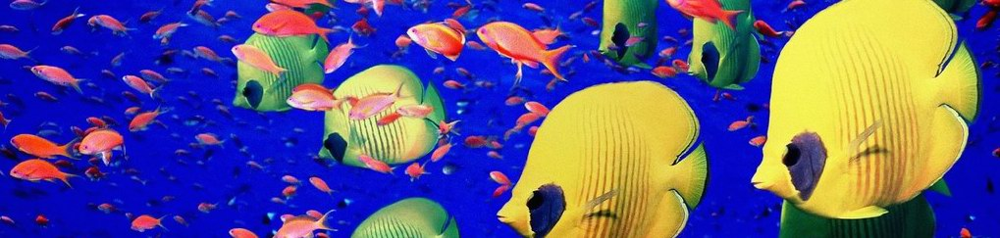

New Arrivals
Bettas
The Betta or Siamese Fighting Fish is one of the most popular aquarium fish.
Over 100 years ago aquarists in the Orient began breeding Betta fish to emphasize
color and finnage. The results of those efforts are readily seen in the beautiful
variety of today's Bettas.
Discus
Discus originate in the mixed tropical waters of the Brazilian Amazon River of South America.
The Amazon and its tributaries contain water described as either white, clear or black. It is in
the areas where these waters "mix" that Discus are found. Today, the Discus is a favorite among
experienced freshwater aquarists and does very well in planted aquariums.
Loaches
Loaches are active bottom dwelling scavengers ideally suited for the community aquarium.
Loach fish consist of some of the most popular of all tropical fish, adding color, interest,
and beauty to any larger community aquarium. Loaches are semi-aggressive fish when housed in
the aquarium individually, so it is important to maintain each species in groups of six or more
to minimize aggression.
Rainbowfish
The name Rainbowfish is derived from the amazing iridescent colorations that change
when light reflects off of these fish. These hardy, active fish do well with a variety
of community fish. A schooling fish, Rainbowfish prefer to be in groups of six or more
fish of the same species.
© 2014 Marilyn Wagner